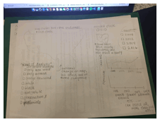
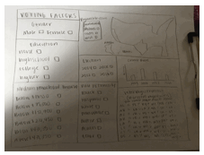
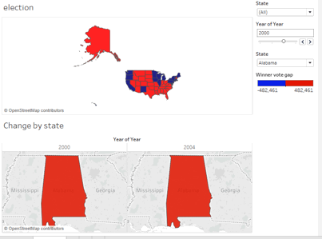
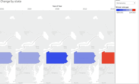
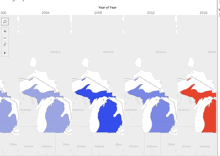
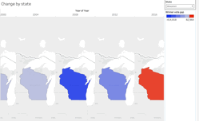
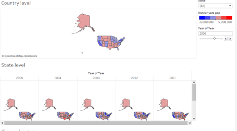
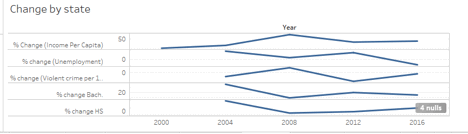
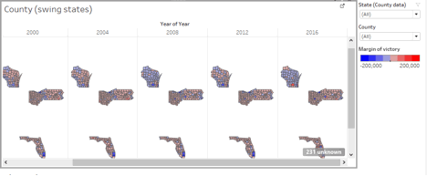
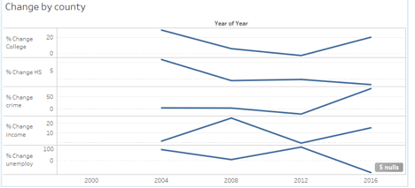

PROJECT 2 SUBMISSION: Voting Factors
Dan Hird, Grace Fetters, Brock Von Holt, Bailey Zyer
Tableau link - https://public.tableau.com/profile/publish/VotingFactors/Presentation#!/publish-confirm
PROCESS BOOK:
OVERVIEW AND MOTIVATION:
Voting Factors is a project that focuses on how
different variables have affected voter turnout and behavior at the state level
over time. The project uses data from the presidential elections that have
occurred since 2000. Our goal with this visualization is to create meaningful
reports that help the user audience come to conclusions about how voting has or
has not changed since 2000 in regard to the factors we
focused on. We want this visualization to be a tool that can be used to better
understand past election so that future elections may be a little more
predictable. This visualization could also be used as a tool for campaign managers
to decide which states to spend the most or least time in depending on the
factor changes the state has experienced since the prior election.
Our motivation and interest in this topic stems from
the most recent presidential election in 2016. This out of the ordinary
election put American politics and the general election cycle in a worldwide
spotlight. We want to understand election drivers and see what factors more
significantly affect how states vote. It is also important to note that America
has one of the lowest voter turnout numbers of developed countries around the
world. Only about 60% of eligible American voters decide to exercise their
right during presidential election cycles.
RELATED WORK:
We were inspired by other works that examine countrywide
issues as well. While they may not be directly related to the voting factors we
have chosen, we were inspired by some of their features and aimed to model some
of their good design in our own visualization. You can view inspiration for an
option bar to compare different variables here. This shows a cool approach to show how a
state has changed over time. Another inspiration was this map that shows a breakdown of voter
information for states and counties. These sources inspired us to think about
more details we wanted to try and include like being able to select certain
regions of the country or ability to select certain election years at one time.
QUESTIONS:
As stated before the main purpose of this
visualization is to delve into how voting factor have affected presidential
elections over time. In order to do this, we had to
come up with factors that we felt were the most important and telling of the
voting population. These factors include demographics like age and gender to
unemployment rates.
With these factors we, as
well as any audience, will be able to answer questions like why states vote the
way they do, the drivers of a state’s shift in voting from one election to
another, and how different factors influenced the outcome of the most recent
election. This could help drive decisions for future candidates when choosing
what different groups of people they should focus on
and where to allocate money when campaigning. Maybe even help candidates decide
which states they want to spend the most time in. We want to observe voting in
our lifetime and be able to answer any questions we
have about it with the chosen data sets
DATA:
The factors that we chose to get data for are:
-Demographics (Race/Ethnicity)
-Population of each state
-Gender
-Age
-Unemployment Rates
-Education Level (High School degree/Higher
Education Degree)
-Crime Rate
These factors were chosen because we think they are
directly related with how a certain state votes. For example, states with high unemployment
rates may be looking for a candidate that will increase jobs and condemn
companies who have advanced their technology while a state with high crime
rates may be looking for a candidate who believes in common sense gun laws.
We were able to gather this data from reputable sources like
census.gov and the Bureau of Labor Statistics. We chose to gather data that was relevant to the years of
presidential elections since 2000. That is, years 2000, 2004, 2008, 2012, and
2016 for each state. We chose these years because we want to focus on voting in
our lifetimes. We decided to add county data for swing state to be able to
drill down the data. We obtained county data from Bureau of Labor Statistics.
In terms of cleaning data, since we obtained all of our data from government websites we were able to
select the pertinent years and variables needed. In order for
the data to be consistent and useful in Tableau, we reformatted the data in
Excel to include only the necessary data points. In essence,
those Excel spreadsheets for each year and factor are what is visualized
in Tableau.
COUNTY DATA
Some changes we made in our project included adding
county data. We discovered that without some county data we were lacking
opportunities to drill down into the data. Thus, we decided to add county data
for the competitive swing states; Wisconsin, Ohio, and Florida. We chose these
states because they are battleground states and have experienced shifts in
Republican and Democratic winners in the past elections since 2000. We searched
for the same data for these counties as we did for the states. We utilized
sources like County Health Rankings Organization to gain this data.
When it came to county data, it was sometimes
difficult to find consistent data for every county. For example, when
researching education levels on the county level, we could only find data for
2012 and 2016. In order account for the missing data for 2000, 2004 and 2008,
we calculated the education rate using the percent change of education level on
the corresponding state level for those years in order to
assume the education rates.
Additionally, we discovered that some data for
education was formatted differently than others. For example
if the high school graduation rate was 84%, some data would be listed at ‘84’
and some as .84. We used excel to solve this issue.
Cleaning the county data was a bit more complex that the state level data
because the volume of the data was much greater. To overcome this issue we utilized Excel’s formula options in order to
manipulate the data to get it into a form that we could use.
EXPLORATORY DATA ANALYSIS:
As seen in our sketches and subsequently our final
project dashboard, we were interested in coming up with an interactive map of
the United States that shows how people in every state voted, and then drill
down into seeing how different groups of people voted in the nation and in
every state as well, and then by county for swing
states, which we were particularly interested in. This visualization helps us
see how the data connects. For example, having the popular vote data coincide
with socioeconomic and other demographic data would be the best tool to tell a
story based on each election year. This story can help the audience come to
multiple conclusions and use the visualization as a tool.
DESIGN EVOLUTION:
Above we listed some other information graphics that
inspired some of our designs. We came up with a general idea for the major
visualizations that we wanted to be able to create. These include; US maps with
states outlines, options bars to compare variables, draggable
timeline, and a color scheme of mainly red and blue representing the two party democratic system. We knew we wanted to make a
dashboard that comprehensively shows the data we gathered.
Here are some rough sketches of our first ideas for
our dashboard:

Once the initial Tableau dashboard had been
completed, some ideas changed to make the design more fluid and intuitive to
use. Here is a screenshot of that:

There were some features we decided to add. These
included; shading on the map to represent if a state voted more republican or
more democratic in each election cycle, the hover ability over each state to
reveal data about the state for that year, and side by side comparisons of each
state from ‘00-’16 each election cycle.
Below are some screenshots that show this feature being added.

After this initial submission is when we realized
that there would be more value in adding county level data for the competitive
states Wisconsin, Florida, and Ohio. So, for our final dashboard design and
visualization, we decided to add the option to drill down into the data for
swing states that we saw as important. This was made possible by being able to
drill down into the county data of swing states and seeing what changed in each
county in terms of the popular vote.
We believed that being able to see the change in crime rate, median
income, and education levels would give us a better grasp on voting factors and
how they have changed.
After this, we decided that we wanted to combine our
visualizations into one dashboard using Tableau’s storyboard feature. This
allowed us to add important insights on the dashboard and easily showcase the
story our data tells. Below are screenshots of our final dashboard design
storyboard as well as views of the county level drill down data options over the
elections since 2000.
State Level:


County Level:


EVALUATION:
The whole point of this visualization is to see how
voting factors have changed over the last few presidential elections and make
conclusions about voting in America. Our resulting visualization does answer
these questions and reveals that population data for a state or for the nation as a whole can be used in conjunction with the current
events of the time period to show what drove voter turnout and to see why
people voted the way they did.
By using the change by each state portion of the
visualization, a conclusion this dashboard reveals is
that states that had increasing unemployment rates in the past up until 2016,
in which they declined, tended to switch from being historically democratic to
republican. For example, In Pennsylvania the unemployment rate was 4.2% in
2000, rose all the way to 7.8% in 2012, then dropped to 5.7% in 2016. Wisconsin
follows the same trend and Michigan also follows a very similar trend in terms
of unemployment leading up to the 2016 election. These three states were
considered key states in Donald Trump’s victory in the 2016 election. As
referenced above, this data demonstrates idea that voting Democrat means people
want change (if things are not going well for people economically or other
reasons), and voting Republican, especially in this case, means the population
wants to keep things the way they are because they believe things are going
well. Additionally, Trump’s campaign often focused on the creation of jobs in
America. When seeing states who had dealt with
increasing unemployment, and are finally seeing unemployment decrease, it would
make sense that it’d be important to them for unemployment to continue to
decline which aligned with Trump’s campaign. This visualization could lend a
hand in showing some of the factors that led to what many saw as a shocking
election in 2016.
INSIGHTS FROM THE DATA:
From our dashboard and research utilizing Tableau’s various feature, we are able to have many insights about voting factors and how they have changed in the last few years. We have chosen to feature narratives about the country as a whole, as well as a couple insights we gained from swing states and their county data.
As a whole, the country has changed a lot since the first election we included in 2000. In 2000 a the Republican President Bush was elected and then reelected in 2004. In 2008 the Democratic President Obama was elected and then reelected in 2012. Finally in 2016, the inspiration for this visualization, the election was unlike any other and resulted in the Republican, Trump, being named President. The past 16 years have been shaped by many events including the 9/11 Terrorist Attacks, the various Hurricanes that ravaged the south, technological advances across all industries, etc. These things have changed the American people and their situation bringing about national security worries, homeland issues, job loss problems in the manufacturing industries, etc. To get a better glimpse of what has actually happened, let’s take a look into the state level data and county level data of select swing states to gain more insights about voting in America.
Focusing on Wisconsin, it is historically a slightly democratic state, but in 2016 it flipped and went Trump’s way. This can be attributed to a larger number of counties in Wisconsin all voting republican in 2016 that predominantly voted Democrat in years past. Wisconsin was a very controversial state in this past year’s election, with a recount of the popular vote needing to be taken in order to confirm Trump’s victory. The media also used Wisconsin as a point of contention as to why Clinton lost both this state and the general election. It was the state that proved to be the tipping point in the general election, and Clinton was widely criticized for ‘ignoring’ the state when campaigning, which could have set her fate. An increase in the crime rate from 2012 to 2016 could also have played a part in Trump’s victory, since this statistic coupled with the international terrorist incidents played right into Trump’s campaign of making America safer inside and outside our borders.
1. WI - 2016 insights county wise - Of the top 20 largest counties by population, 15 of them went to Trump. The two largest went to Clinton (Milwaukee ~1mil and Dane ~500k), but the next 7 largest counties all went to Trump. This holds true with the story of the 2016 election being Trump bringing out the ‘silent majority’ to be his voter base. The 2016 election showed that some large counties were pushed to voting for Clinton (or against Trump), especially Dane and Milwaukee, the two largest counties by population. However, these two huge counties proved to not be enough and there was widespread support for Trump throughout the state, especially in areas that have historically swung democratic, the east and south-east portions of the state. Bringing Republican votes from all over the rural parts of the state was exactly what Trump needed to win the state and win the election overall.
2. This most recent election can draw a parallel to the historic 2008 election, when Obama took office for the first time. Wisconsin was considered a safe win for Obama, which is usually not the case even though it has a slight democratic edge. A couple of factors drove the 2008 election that sent it Obama’s way: The fact that America was more than ready for its first African-American president, which was felt even more in Wisconsin due to its proximity to his home state, Illinois. In addition to this, many people were reeling from the housing bubble bursting that they knew was going to seriously affect their financial health. This can be witnessed by a drop in median income and a significant rise in unemployment from 2008-2012 in the largest 4 counties in the state, Dane, Milwaukee, Waukesha, and Brown (Brown County is Green Bay). The general consensus was that the former President Bush put policies in place that contributed to this economic recession, and Obama’s platform of “Change You Can Believe In” was exactly what people believed in. Similar to the 2016 election, Obama was able to swing the rural counties (North/East WI) his way which was the fuel to crush McCain by hundreds of thousands of votes in the state.
When election season comes around, Ohio is always a hot topic of conversation. Not only is it a major battleground state, but Ohio is also a bellwether state, having continuously voted for the winning presidential candidate since 1964. On the state level, we can see Ohio is inconsistent in the way it swings, going Democrat in 2008 and 2012, and Republican in 2000, 2004, 2016.
So what caused Ohio to switch in 2008? From 2004 to 2008, Ohio saw a decrease in graduation rates. High school graduation decreased by .5% and college attendance decreased by 1.8%. Unemployment decreased by 43.3%. When comparing this data with some of the key promises in Obama’s 2008 platform, we can infer that Ohioans were drawn to Obama’s promise of better public education because of their decreasing graduation rates. With such a sharp increase of people at work, citizens in Ohio may have been drawn to promises of a higher minimum wage, laws to promote a flexible work-life balance and increase in funding for afterschool programs.
When asking what made Ohio go red in 2016, we decided to drill down into the data. In 2012, only 17 of the 88 counties went democratic and it was enough to win the entire state by just 166,214 votes. While the three most populated counties (Franklin, Hamilton, and Cuyahoga) voted Clinton in 2016, Clinton only won 8 total counties, allowing Trump to win by 446,841 votes. We explored our data on the 9 counties that were democratic in 2012 and republican in 2016 to try and see what pushed these 9 counties to the other side and tipped the scales in Trump’s favor.
Of the nine counties that were Democratic in 2012, but Republican in 2016, they all had the same trend in unemployment since 2000. The counties (Ashtabula, Montgomery, Wood, Erie, Ottawa, Portage, Trumbull,Stark and Sandusky) have had increasing unemployment, besides a very slight decrease in 2008, up until 2016 where they saw a sharp decrease in unemployment. This is important to note because Trump’s campaign often centered around the creation of jobs and promising to bring jobs back to America. After finally seeing a decrease in unemployment after experiencing rising unemployment in the past, voters in these counties may have been drawn to Trump’s focus on jobs. They may have been inclined to vote Republican based on the idea that voters tend to swing right when they believe things are going well (i.e. decreasing unemployment). It has been said that Trump’s campaign brought out a silent majority. Even though a majority of counties(many rural) voted republican in 2008 and 2012, it wasn’t enough to win. While these 9 counties seem small in numbers, when they joined the many rural counties that went Trump in 2016, it was enough to win the state of Ohio.
In all, the Voting Factors visualization helps the audience come to the conclusion that these factors matter in how a state votes. These insights are meaningful and prove that voting in America is complex and those watching the elections can benefit from a visualization that explains what has happened in the past and why voters voted the way they did. A visualization like this could also help future candidates make important decisions about where to allocate time and money during their campaign.